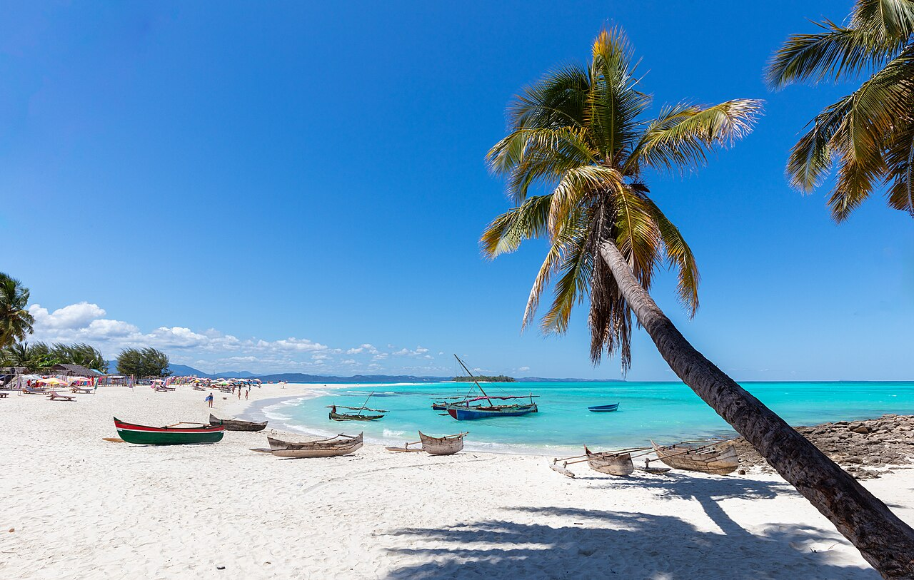
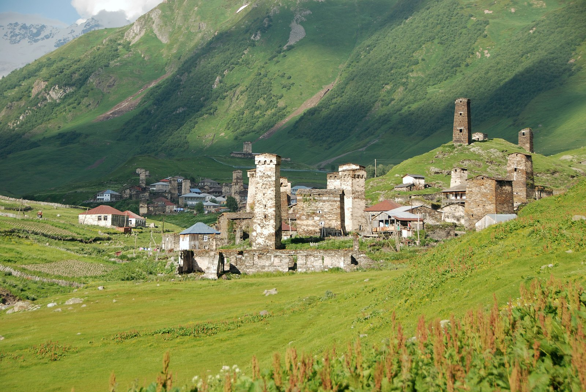
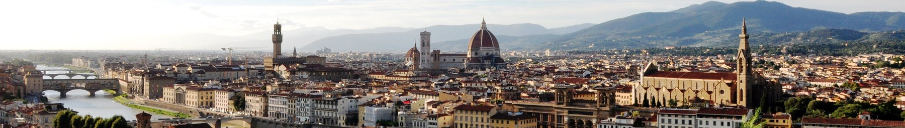
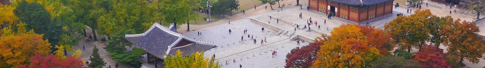
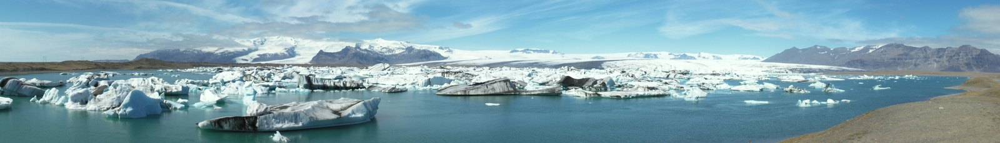
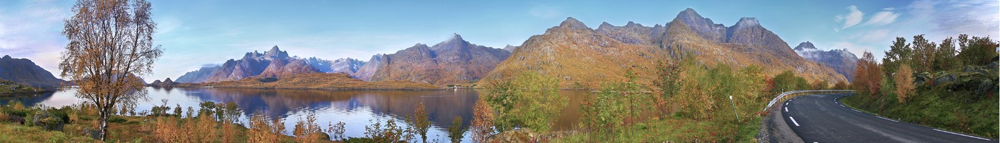
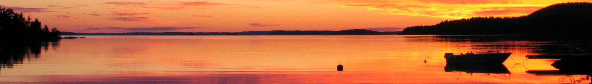

Frecce: ruota il mondo. Home: vista iniziale.
UN TEAM. LA TUA VOGLIA DI PARTIRE.
La prossima partenza comincia da un’idea.
Scopri le mete, lasciati ispirare e parlane con il nostro team.

CAPITOLO 013 raccontiLUOGHI DAL MONDOViaggi vissuti, paesaggi e persone.APRI IL CAPITOLO ↗
CAPITOLO 0210 articoliCURIOSITÀ DAL MONDODieci prospettive per guardare il mondo con occhi nuovi.APRI IL CAPITOLO ↗
CAPITOLO 031 articoloCITTÀ SEGRETEDietro il panorama dei Sassi, cisterne e canali raccontano l’ingegno quotidiano di una città costruita insieme alla roccia.APRI IL CAPITOLO ↗
CAPITOLO 041 articoloSAPORI E TRADIZIONIIn Corea del Sud, il patrimonio del kimchi comprende un gesto collettivo: preparare, condividere e trasmettere un sapere.APRI IL CAPITOLO ↗
CAPITOLO 051 articoloNATURA STRAORDINARIAForme vulcaniche e colori della roccia raccontano un’isola attraverso i processi che l’hanno modellata.APRI IL CAPITOLO ↗
CAPITOLO 061 articoloROTTE ICONICHEUn ponte ferroviario diventa una pagina di storia: il viaggio incontra l’ingegneria prima ancora di arrivare a destinazione.APRI IL CAPITOLO ↗
CAPITOLO 071 articoloRITUALI DEL MONDOUna pratica quotidiana racconta appartenenza e trasmissione culturale, molto più di un servizio da prenotare.APRI IL CAPITOLO ↗Sette capitoli. Diciotto storie. Da dove vuoi cominciare?
IL PROSSIMO PASSO, CON CHIAREZZA
Dall’ispirazione al confronto.
Scopri le mete
Apri le pagine di Fátima e Castelli, Alsazia & Parigi: fotografie e descrizioni ti aiutano a capire quale esperienza ti incuriosisce.
Raccontaci cosa cerchi
Scrivi su WhatsApp per concordare un appuntamento e condividere con il team desideri, domande e aspettative.
Valuta i dettagli
Quando la proposta sarà definita, approfondisci programma, servizi e condizioni prima di decidere.
IL TEAM CLICK&VIAGGIA
Il valore di un viaggio
comincia dalle persone.
Click&Viaggia è uno dei team italiani di MWR Life – Travel Advantage. Riunisce giovani amanti dei viaggi che hanno trasformato una passione comune nel proprio lavoro principale.
Ascolto, ricerca delle opportunità e voglia di condividere: il nostro punto di partenza sei tu, con le tue idee e il tuo modo di vivere il mondo.
Conosci Click&ViaggiaPARLIAMO DEL TUO PROSSIMO VIAGGIO
Un’idea in mente?
Cominciamo da qui.
Raccontaci dove vorresti andare e con chi. Scrivi al team per concordare un appuntamento dedicato alle informazioni che cerchi.
Richiedi un appuntamentoSi apre WhatsApp con un messaggio già preparato. Puoi modificarlo e scegliere quando inviarlo.
Le tue idee, anche sul telefono.
Aggiungi Click&Viaggia alla schermata Home dal menu del browser, dove supportato.